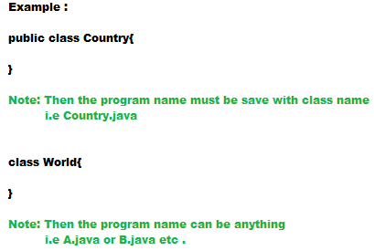

JAVA SOURCE FILE STRUCTURE :
- A java program can contain any number of classes, but at most one class can be declared as public .
- If there is a public class then the name of the program and name of the public class must be matched, other wise we will get Compile time Error .
- If there is no public class then we can use any name for java program and there is no restrictions .
- For compilation we need java program name and for execution we need java class name .
- Whenever we are compiling a java program for every class a .class file will be created .
- Whenever we are executing a java class that corresponding class main method will be executed .
- Whenever we are executing a java class if the corresponding .class file is not available then we will get Runtime Exception: NoClassDefoundError .
- It is highly recommended as the class should public and name of the program and name of the class should be same .

IMPORT STATEMENT :
- Import statement is used to import a built-in or user defined java class, which available in other directory and your class
can refer that class and use it in your class .
- We can avoid import statement by using fully qualified names, but this is not recommended, because it increases the code length and
reduces the code readability .
Types of import statement :
- Explicit Import
- Implicit Import
Explicit Import:
- It is highly recommended to use explicit class import because it improves readability .
Example: import java.util.ArrayList;
Implicit Import:
- It is not recommended to use implicit import class because it reduces readability of the code .
- The problem in implicit import class is all the class inside the package are available for compilation even we use or not used .
- We will get ambiguity problem for implicit import statement
Example: import java.util.*;
- In above program ambiguous problem happen because "Date" class present in both package in java.util and in java.sql also
- While resolving this problem compiler always give the precedence in the following order .
- Explicit class import
- Class present in the current working directory
- Implicit class import
- When we are importing a package all classes and interfaces present in that package are by default available, but not sub package .
- Hence to use sub package we have to import until the sub package level .
- The following two packages are not required to import because all class and interfaces present in there packages are by default available .
- java.lang package
- default package (current working directory )
- Import statement are totally depends on compile time and there no effect on execution time .
Java 1.5 version new features :
- for-each loop
- var-arg method
- co-varient return types
- Autoboxing and Autounboxing
- Queue
- Generics
- Enum
- Annotations
- static import
Static import:
- Static import introduce in java 1.5 version .
- According to SUN people static import improves readability of the code .
- But according to world wide programming expert static import reduces the readability of the code .
- Hence if there is no specific requirement then it is not recommended to use static import .
- Basically we can access static members by using class name, but whenever we are writing static import then we are not required to use class names, we can access static members directly .
Explain about System.out.println() ?:
- As out is a static variable present in System class, whenever we are writing static import we can access out variable directly without class name
Package :
- It is an encapsulation mechanism to group related classes and interfaces into a single module .
- Example : All classes and interfaces which are required for database operations are grouped into a separate package, which is nothing but java.sql package .
- All classes and interfaces which are required for File I/O operations are grouped into a separate package is java.io package .
- The main advantages of package statement are ,
- We can resolve naming conflicts .
- It improves maintainability of the application .
- It improves modularity of the application .
- It provide security .
- The standard naming convention for package is :
com.domainname.modulename.submodulename.classname
Example : com.rbi.card.debitcard.customer;
- If the required package directory is not available while compiling automatic those directory will created .
- In any java program, there should be at most one package statement . We can not write two package in a single java program .